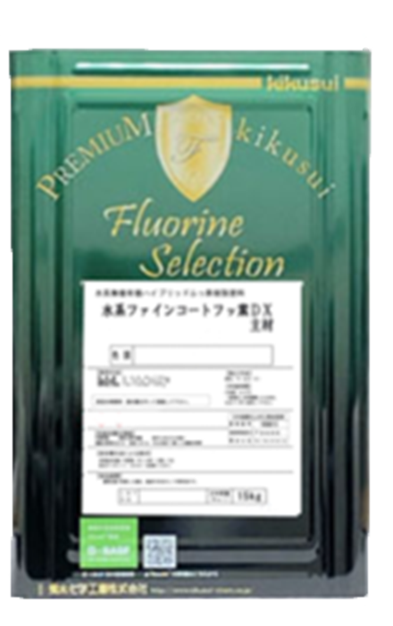

PRICE
高崎市の外壁塗装
料金の目安
「結局いくらかかるの？」に、先にお答えします。30坪の戸建てを例に、塗料のグレードごとの料金の目安をまとめました。
- 30坪（外壁 約100㎡）
- 足場込み
- 下地処理・3回塗り込み
30坪・足場込みの料金表
※群馬県の相場をもとにした目安です。正確な金額は、無料の現地調査のあとにお出しします。建物の形や傷み具合によって変わります。
GRADE
4つの塗料、どう違う？
ちがいは主に「長持ちする年数」と「価格」。この先その家に住む年数で選ぶのがおすすめです。

ウレタン
価格をおさえやすい塗料。数年のうちに建て替えや住み替えの予定がある方に。
55〜65万円 ／ 約8〜10年

シリコン
価格と長持ちのバランスがよい塗料。はじめての塗り替えで迷ったら、まずはこちら。おトクなコミコミプランもご用意しています。
65〜80万円 ／ 約10〜15年

フッ素
汚れにくく長持ち。塗り替えの回数を減らしたい方に。
80〜100万円 ／ 約15〜20年

無機
4種の中でいちばん長持ち。長く住み続ける家を、できるだけ手間なく守りたい方に。
95〜120万円 ／ 約20〜25年
INCLUDED
この料金に、ぜんぶ入っています
- 足場安全に、ていねいに塗るための足場の組み立て・解体。
- 高圧洗浄古い汚れやコケを落として、塗料がのる面をつくります。
- 下地処理塗装でいちばん大事な工程。数年後の差はここで決まります。
- 3回塗り下塗り・中塗り・上塗り。中塗りで止めません。
- 付帯部塗装雨どい・軒天・破風など、外壁まわりの細かな部分も。
- 近隣あいさつ工事の前に、ご近所へのごあいさつにうかがいます。
 屋根塗装（外壁とセット）
屋根塗装（外壁とセット） コーキング打ち替え
コーキング打ち替えCHECK
見積書の見方・安すぎる見積りに注意
ほかの会社の見積りとくらべるときは、金額だけでなく「何が書いてあるか」を見てください。安く見えても、大事な工程が抜けていることがあります。

1
塗る回数が書いてあるか
「下塗り・中塗り・上塗り」と回数がわかるか。中塗りで止めると、2〜3年で色落ちなどに差が出ます。
2
下地処理が入っているか
高圧洗浄やひびの補修など、塗る前の工程が書かれているか。ここがないと、数年後に差が見えてきます。
3
誰が塗るのか
見積りに来た会社と、実際に塗る人が同じか。星野美装は下請けに出さず、代表が自ら塗ります。

WORKS
この価格帯で塗った施工事例


FAQ
料金についてのよくある質問
Qうちは30坪ではありません。料金はどうなりますか？
塗る面積によって金額は変わります。無料の現地調査で実際に測り、正確な金額をお出しします。
Q塗料はどう選べばいいですか？
この先その家に何年住む予定か、次の塗り替えをいつ頃にしたいかで選ぶのがおすすめです。現地調査のときに一緒に考えます。
Q見積りのあとに断ってもいいですか？
もちろんです。現地調査・お見積りは無料で、お断りいただいても費用はかかりません。